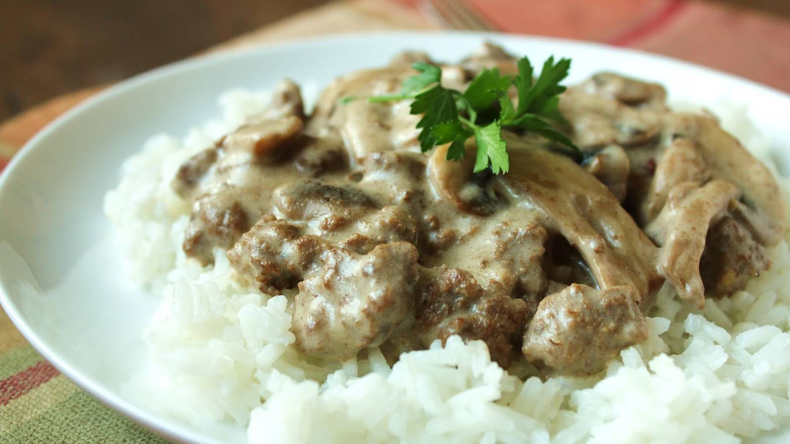

Brandon's Favorite

Description
This dish is called Brandon's Favorite. Essentially it is beef stroganoff but with his mother's twist of keeping it very simple.
The simplicity is what makes it very special. It is beef and mushroom soup on top of rice with some basic spices. Any body can make this dish.
This dish is called Brandon's Favoritebecause it is the author's favorite dish growing up.
Ingredients
- Campbell's Mushroom soup
- Cut Beef of your choice
- White Rice
- Salt
- Pepper
- Onion
- milk
Steps
- Cut the onion up and toss it into a pan.
- Let the onion cook and start seasoning the beef with salt and pepper.
- Put the rice in the rice cooker.
- Once the onions are cooked toss the beef into the pan.
- Cook the beef and stir occasionally.
- Once the meat is cooked toss the mushroom soup into the pan.
- After a couple minutes pour 1/4 cup of milk into the pan.
- Let the soup simmer with the meat until the rice is done.
- When the rice is done put it into a bowl and pour the beef and soup on top of the rice and serve.